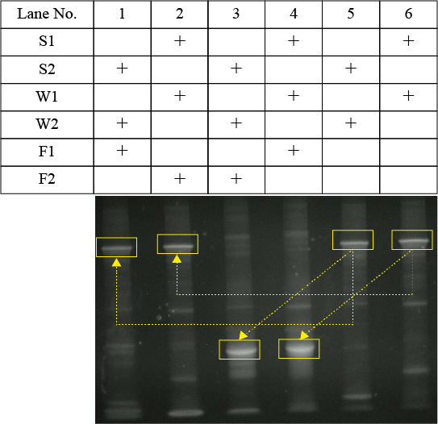
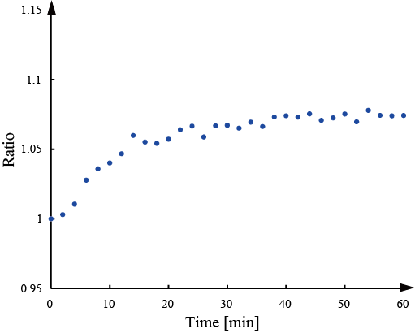

Verification of mismatched base pairs
In the design of DNAWalker, mismatched base pairs were incorporated into the base sequence in order to block undesired reaction pathways. In Experiment A, we confirmed that the mismatched base pair worked as we expected. Fig2 shows the results of Experiment A. In pattern A in Fig. 2, it can be seen that output was released because the fluorescence intensity is rising. This means that double-stranded DNA, S1-W1 and single-stranded DNA, F1 have undergone a strand displacement reaction. In pattern B in Fig. 2, it can be seen that output is not released because the fluorescence intensity has not changed from the initial time. This means that double-stranded DNA, S1-W1 and single-stranded DNA, F2 did not react with each other due to mismatch base pairing between S1 and F1. Likewise, in pattern C, output is emitted due to the strand displacement reaction of S2 - W2 and F2, and the fluorescence intensity is increased. In pattern D, we expected that the reaction of S2 - W2 and F1 would not occur thanks to mismatch base pairing between S2 and F1. However, it was impossible to obtain the result as much as the pattern B.
{kind=link}
{kind=link}
From, the results of Experiment A, We thought that Reporter 1 and F 1 had reacted directly, and conducted a verification experiment of Reporter 1 and F 1. From the results of the verification experiment (Fig.3), it can be seen that when F1 is administered, fluorescence intensity increases as expected. Therefore, we conducted verification from similar patterns A to D using electrophoresis.
{kind=link}